把角色任务串成流程
从商家接入、选品与询盘，到交易流转，定义各方在每一步要完成的事。
AI 产品经理 · 独立实验者
用研究的方式做产品，
用产品的方式做研究。
曾主导 UniTrade 跨境 B2B 创业。
这里记录我从场景判断、产品设计到工程交付的实践。
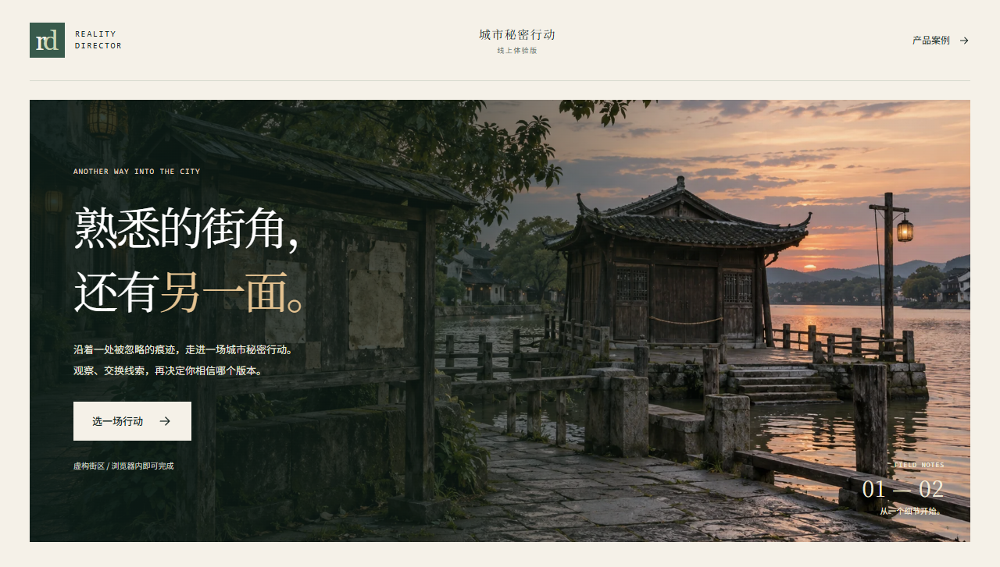
独立域名 · 创业交付
跨境 B2B · 创业经历
从供给接入，
到交易协同。
一段真实上线的跨境 B2B 创业实践。我独立承担产品设计、业务流程、数据治理与工程交付，把供应商、采购方和平台运营连接在同一套系统里。
从商家接入、选品与询盘，到交易流转，定义各方在每一步要完成的事。
统一商品、规格、类目与属性的表达，让历史资料和新增供给进入同一套规范。
完成前后端实现、部署上线与持续迭代，把产品判断落实到可运行的业务链路。
公开展示产品职责、业务流程与交付范围，保留商品、供应商与经营数据的隐私。
从陪伴、活动到亲子互动与城市故事，把场景变成可走通的体验。
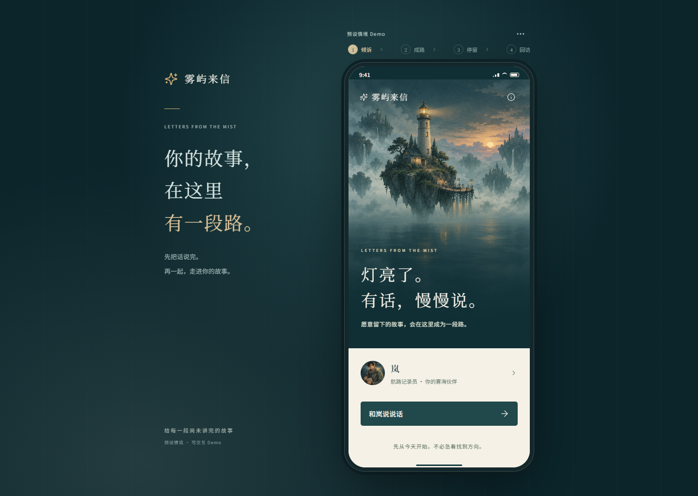
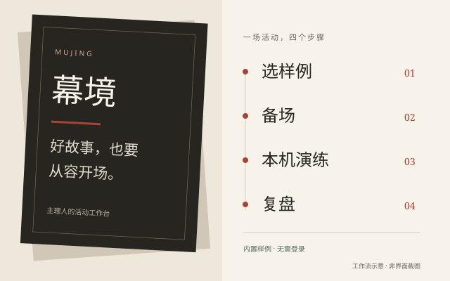
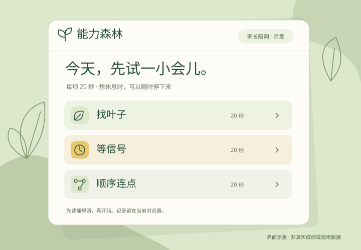
从浏览器工作台，到研究评测、知识组织与模型部署。
Recalibrating Visual GEO:
Anchor-Decoupled Evaluation and a Transfer Probe
视觉优化的效果，
如何被可信地衡量？
面向多模态检索中的视觉生成式引擎优化（Visual GEO），研究如何在不借用评测查询的前提下衡量图像优化带来的排名变化，并检验效果能否迁移到其他编码器。
论文已被 ICDM 2026 录取。复现代码与结果已公开，论文终稿整理中。
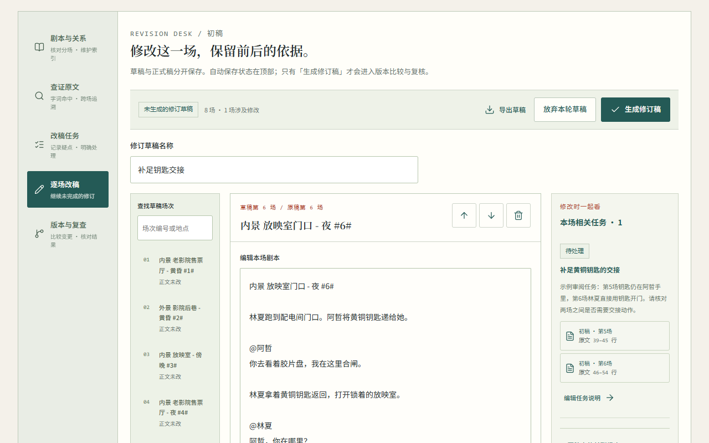
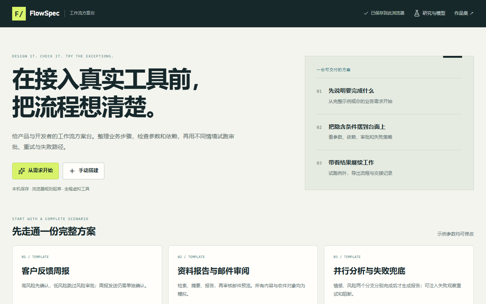
将项目资料、实体关系和模型服务接到同一条问答链路中，并完成受限环境下的部署与交付。
将健康对照、前驱期与帕金森病的早期分类实验，整理为从输入校验、模型比较到结果追踪的可复现研究流程。
公开展示以合成数据验证流程。原始合作数据未公开，新流程尚未在其上复验，不代表临床效果。
研究、设计与工程执行中沉淀的工具。按需选用，直接查看源码。
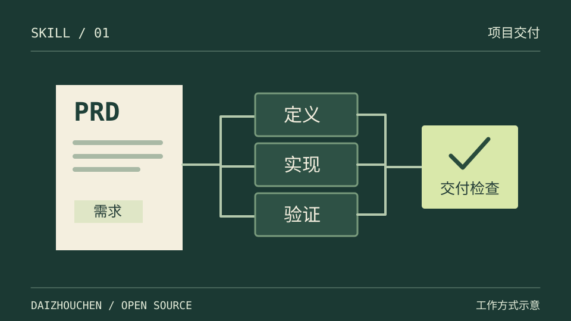
把需求拆成任务，跟踪依赖、风险与交付检查。
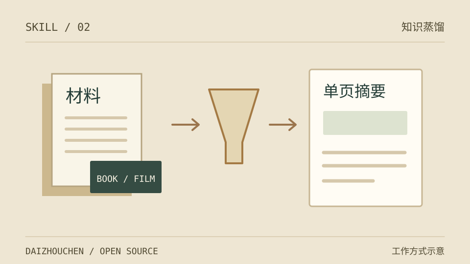
从书籍、电影与领域资料中提炼结构，生成单页 HTML。
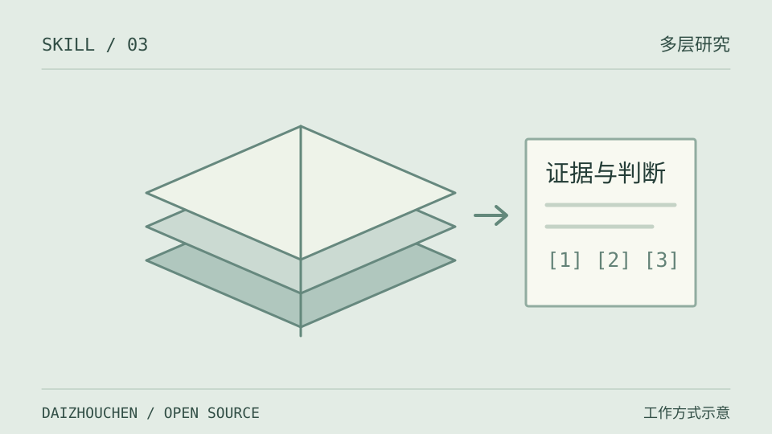
结合历史脉络与横向比较，组织证据、推断和研究结论。
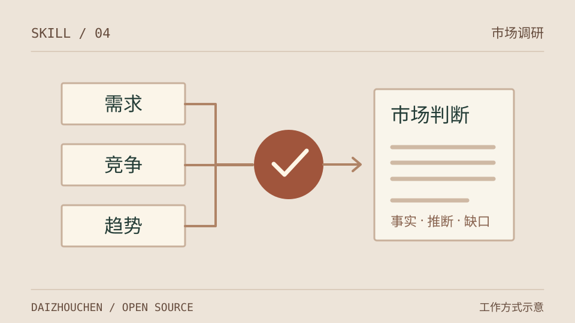
按可用数据源规划调研，交叉核对需求与竞争信息。
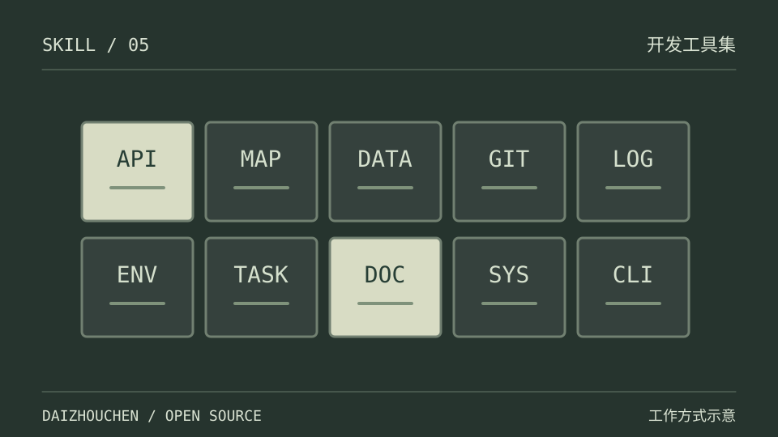
API 模拟、代码库梳理与数据分析，按需取用的开发工具。
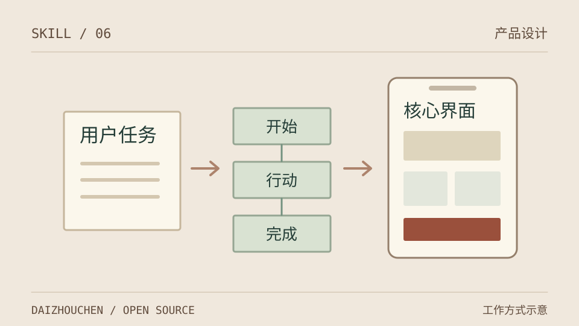
用功能清单、线框与用户流程，把想法写成可讨论的设计稿。
更多工具：wechat-mp-writer · tool-mastery · svg-icon-forge · ppt-master GitHub 主页
记录产品、研究与工具的形成过程，以及每个阶段留下的东西。
整理产品作品、工程实践与开源工具，形成主页、产品案例与 GitHub 仓库相互衔接的展示结构。
独立负责商家接入、数据治理、选品匹配、询盘交易到平台上线运维，创业期间 unitrade.shop 上线运营。建立统一的商品规范、分类与属性体系，并完成历史商品迁移。
完成沉浸式活动引擎的历史 MVP 探索。当前公开版本呈现备场、本机演练与复盘流程，使用预置内容，不连接实时 AI。
围绕书籍、电影与领域知识构建蒸馏工具，并将产品分析方法沉淀为 claude-product-designer 可复用设计流程。
围绕深度研究、公众号写作、演示文稿与市场调研，开发或整理可复用的 Skill 工作流。
将项目管理与开发任务整理为可复用工具：SuperPM 保持独立，10 个 OpenClaw 开发者工具归入合集维护。
轻互动练习 MVP V1.2.1，完成微信小程序与 CloudBase 原型交付，留有开发版上传记录。
围绕代谢组学数据开展分类研究，探索特征筛选与多模型比较，以 Notebook 留下实验过程。